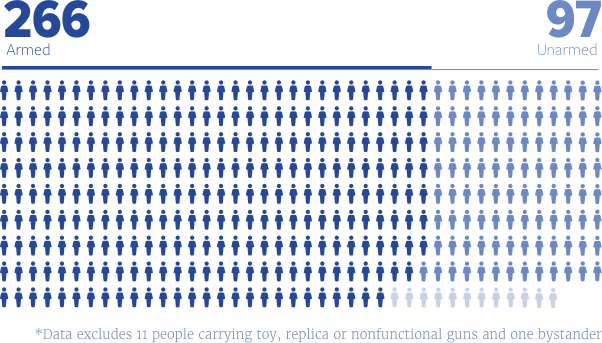
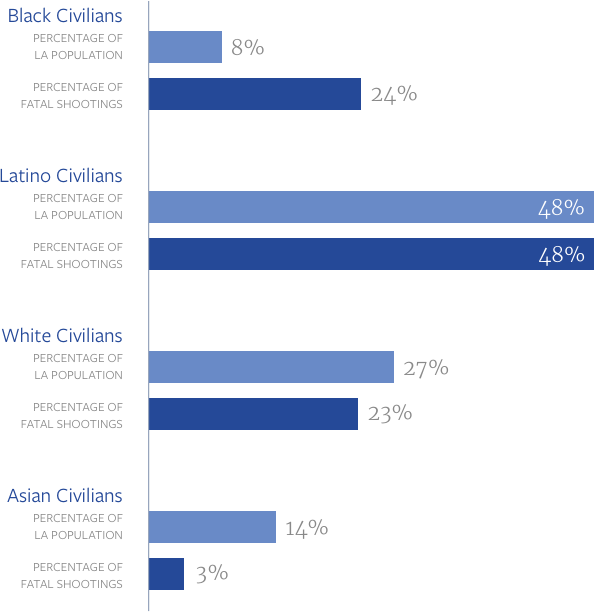

Unarmed and dangerous?


The call from dispatch was routine: shots fired on Eucalyptus, an 18th Street Gang hangout in the city of Bellflower.
Los Angeles County sheriff's deputies rolled up to find a scene that was just as ordinary: two men drinking beer in the parking lot of an apartment building. It was about 9:30 p.m. on a summer night, June 16, 2010.
The deputies told the men to put their hands on the hood of the patrol car. One complied. The other put his beer down instead and reached behind him.
Deputy Daniel Mailloux thought the man had a gun, according to official accounts, and shot Dexter Luckett in the chest, killing him.

“The only thing he probably reached for is to pull up his pants, because they were probably falling down,” said Anthony Jefferson, Luckett’s best friend, who was not there. Luckett weighed 140 pounds and stood nearly 6 feet tall.
Luckett, 23, was partying with a friend after getting accepted to trade school.
He also was unarmed.
An investigation by KPCC found one in four people shot by law enforcement officers in Los Angeles County — like Luckett — do not have a weapon: not a gun, not a knife, not even a stick.
Armed vs. Unarmed
According to records of shootings provided by the district attorney, one in four people shot by officers was unarmed.
Police agencies do not typically release those kinds of statistics. They emerge from KPCC’s analysis of district attorney summaries of officer-involved shootings in L.A. County between 2010 and 2014, as well as other public records and interviews. Those documents show 375 people were hurt or killed in those cases.
The new data adds context to an intense debate around police shootings of unarmed people that has boiled over in the past year and a half — a debate that has focused mostly on individual shootings in Southern California and across the country.
Based on the KPCC review, officers in Los Angeles County collectively shoot unarmed people at too high a rate, said William Terrill, a Michigan State University criminologist who studies police use of force policies and practices.
You have to do what you have to do to protect your own life and the lives of others.
While there’s no standard, Terrill said, NYPD records show officers there shot unarmed suspects less than 20 percent of the time during the same period. Terrill thinks even that is too many.
“My gut tells me 20 percent is too high,” he said. “My gut tells me probably one in 10 is too high.”
Los Angeles County sheriff’s deputies have an even higher ratio, KPCC found: one in three people shot by deputies was unarmed.
Sheriff Jim McDonnell said that would be “troubling to anybody,” but maintains the shootings were unavoidable.
“You have to do what you have to do to be able to protect your own life and the lives of others,” McDonnell said.
Legal precedent supports McDonnell’s view. Officers are justified in shooting if they feel they — or other officers or members of the public — are in danger.
Looking Carefully At Unarmed Shootings
KPCC’s analysis finds many instances fit McDonnell’s scenario. Officers in Los Angeles shot 266 armed suspects. In another 13 shootings of unarmed people, police said the individuals reached for officers’ guns or holsters.
The D.A. did not release records on at least 29 shootings for the 2010-14 period. They are still pending.
But officers shot in at least 54 instances because they believed — mistakenly — that people were armed. Among the shootings:
-
Rigoberto Arceo
Los Angeles Sheriff’s Deputy Luis Mendoza fatally shot Rigoberto Arceo as he moved toward Mendoza with what the deputy described as clenched fists. Arceo was unarmed. View documents regarding this shooting
-
Eduardo Armas
Deputies Jeremy Draper, Michael Espinosa and Vincent Ortiz shot Eduardo Armas, mistaking his wheelchair for a weapon during a reckless driving stop. View documents regarding this shooting
-
Andres Avila
Pomona Police Officer Edgard Padilla fatally shot Andres Avila believing Avila was arming himself after being roused from sleeping in his car. The shiny object Avila grabbed turned out to be a silver container of cocaine. View documents regarding this shooting
-
Brian Beaird
LAPD Officers Armando Corral, Leonardo Ortiz and Michael Ayala fatally shot Brian Beaird, a veteran, when they saw him reaching towards his waistband while fleeing his Corvette after a high-speed chase that started in Cudahy. He, too, was unarmed. View documents regarding this shooting
In reviewing the circumstances surrounding Dexter Luckett’s death, prosecutors found Mailloux was within his rights to shoot and declined to file charges. Read the district attorney’s declination letter regarding Dexter Luckett’s death
In fact, the Los Angeles County District Attorney’s Office said it hasn’t brought criminal charges against an officer for an on-duty shooting in 15 years.

“Police officers are allowed to use deadly force,” said Deputy District Attorney James Garrison, who heads the division that reviews police shootings. “We make the decision based on the law.”
His boss, District Attorney Jackie Lacey, agrees.
“We understand the public's anger over what they perceive to be unjustified shootings and killings,” she said. “But we are looking very, very carefully at these cases.
“We're pretty confident if you look at the reasons that we have and the law, that you will find that we made the right call in every case," she added.
Patterns In Police Shootings
Lacey’s office is the only public agency that reviews every time an officer in Los Angeles county shoots someone. But it does not identify or report on patterns that might address the big issues in the debate over officer-involved shootings — for one, the race of people who were shot.
KPCC gathered those details from Los Angeles County medical examiner records and found, between 2010 and 2014, law enforcement officers fatally shot black people at triple their proportion in the population. The race of those who survived shootings is not publicly available.
Race And Officer-involved Shootings
A KPCC review of medical examiner records from the past five years found law enforcement officers in Los Angeles County fatally shot black people at triple their proportion in the population.
KPCC’s analysis found that in nearly half the cases where officers shot unarmed people, they mistakenly thought individuals were arming themselves because they dropped their hands out of sight or “reached for” a waistband or their pants.
That’s how Michael Nida died.

A Downey Police officer responding to a call of an ATM robbery saw Nida jaywalking and stopped him. Nida ran, and she called for backup.
Two other officers chased Nida down, telling him to show his hands and get on the ground. At first, he complied.
“I’ll blow your head off,” officer Steven Gilley told Nida, according to the officer’s deposition for a civil lawsuit.
Nida jumped up and ran again.
That’s when Gilley lost sight of Nida’s hands, he told investigators, and squeezed off three rounds from his MP5 submachine gun.
A 31-year-old construction worker, Nida wasn’t the robber.
He was on his way to dinner with his wife to celebrate his birthday. He had dashed across the street to buy cigarettes while gassing up his pickup truck.

His family assumes he ran to avoid spending his birthday in jail when he hadn’t done anything wrong.
“In my mind, Michael wasn’t dead,” said Jean Thaxton, who raised Nida from childhood and considers him a son. “This was just a nightmare I was going to wake up from.”
The city of Downey settled the family’s wrongful death lawsuit in 2013 for $4.5 million.
Gilley declined to comment for this story. He is still working for Downey police and has since been promoted to detective.
The Downey Police Department declined comment for this story.
‘Reasonable’ Fear And Deadly Force
Terrill, the Michigan State use-of-force expert, said he doesn’t think missing hands alone are enough to justify self-defense.
“If they were shooting all the suspects that reach or don’t show their hands when the officer wants them to,” he said, “I can’t imagine the number of police shootings — if the public thinks there's a high number now — I can't imagine what there would be.”
Los Angeles Sheriff’s Department Commander Rod Kusch, whose homicide bureau investigates all deputy shootings, disagrees.
“There is nothing that requires us to actually wait and see the gun or wait to see the knife,” he said. Deputies’ “background, training and experience” with armed suspects triggers a self-protection response when a suspect’s hands disappear, he said.
His argument relies on the 1989 Supreme Court case Graham v. Connor, which has been the standard policing agencies and prosecutors use to decide whether a shooting was legal.
“Case law talks about tense and rapidly evolving situations,” said Garrison, the prosecutor. “The courts are mindful that you can't, so to speak, Monday morning quarterback.”
Though it has become the ruling case in police shootings, Graham v. Connor didn’t involve a shooting.
Dethorne Graham, a car maintenance worker, had just hustled out of a convenience store in Charlotte in 1984 when police detained him. The officer said something seemed “amiss,” according to the ruling.
Graham, a diabetic, had rushed in for orange juice. He sued, arguing officers violated his Constitutional rights.

The high court ruled those reviewing excessive force — in Graham’s case, detaining him — must consider whether another officer would have “reasonably” made the same decision based on the facts before them.
Interpreting that case, Lacey’s office — and other prosecutors across the country — find lethal force is justified if an officer’s fear is “reasonable,” even if the threat could be subdued through less lethal means, or turns out to be imagined.
Police supporters said that’s how it should be, even if it occasionally results in tragedy.
“These rapidly-evolving situations create the capacity to misperceive,” said George Williams, a former instructor for the California Specialized Training Institute, a government agency that trains police. “And the law permits mistakes.”
These rapidly evolving situations create the capacity to misperceive. And the law permits mistakes.
If it’s an honest mistake, police officers shouldn’t have to face a jury, agrees Peter Moskos, a former Baltimore City police officer who teaches at the John Jay College of Criminal Justice in New York.
“That’s the bargain we have with police: you do your best and we’ll have your back,” Moskos said. “If you start prosecuting cases, I think you will get what you see in Baltimore, which is a murder rate that skyrocketed literally overnight.”
That bargain seems to extend to discipline in Los Angeles.
Few Consequences When Shootings Violate Policy
The LAPD said it has fired one of the more than 200 officers in its department who shot between 2010 and 2014 for violating policy.
Interviews and some public reports show when officers face consequences after a shooting, re-training is the most common result — even if the person was unarmed.
Sheriff’s internal investigators cleared Mailloux for shooting Luckett — although they took issue with some of the tactics he used before the shooting took place. He left the department in May and did not return calls for comment.
In documents newly posted online, Los Angeles sheriff’s officials revealed they have disciplined at least 30 deputies after shooting civilians on duty, finding fault with tactics leading up to the shooting.
But officials found every decision to shoot in policy — except for one.
It started in Lancaster at around midnight on January 21, 2012.

Two Los Angeles County Sheriff’s deputies tried to stop Christian Cobian, 26, for riding his bike on a sidewalk without lights.
One in four police shootings in Los Angeles County reviewed by KPCC began just like that — when cops stopped someone on the street for a traffic violation or simply to question them as part of aggressive policing. Those situations quickly escalated.
Cobian didn’t comply with the deputies. He shouted “F--- this!” and tried to leave, according to the district attorney’s recounting.
Deputies never saw a gun, but Cobian’s left hand was under his shirt at his waist, they said. So — as in the case of Nida, Luckett and dozens of others — deputies thought Cobian had a weapon, according to the district attorney’s summary.
Together, deputies Uriel Cruz and Lee Warren fired 13 rounds.
Cobian was unarmed.
“My cousin heard the gunshots and yelled: ‘Cristian!’” his mother, Carmen Cobian, recalled.
Not 10 minutes earlier, Christian Cobian had borrowed his little sister’s red bicycle from the garage to rush to the corner store to buy cigarettes before it closed, she said. The family had been having a celebration — a baptism — and almost everyone had gone home.
My conscience is clear. My son is at peace. Only God will judge them.
“I tossed on a sweater and hurried out,” Carmen Cobian said in Spanish. “I crossed the yellow tape. ‘That’s my son’s bike. Where is he?’ I asked.”
She said it was 5 a.m. before a medical examiner came over and confirmed that her son was dead.
“My conscience is clear. My son is at peace,” she said. “Only God will judge them.”
Neither deputy returned calls for comment. The Sheriff’s Department disciplined both officers, records show, but won’t say how. As of last month, they were both still employed as deputy sheriffs.